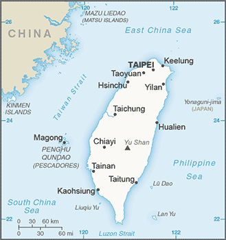
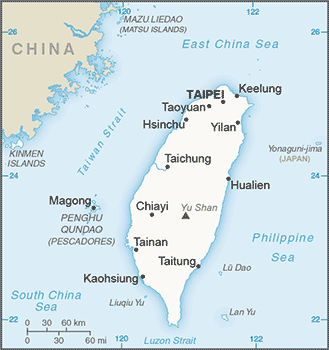

East & Southeast Asia :: TAIWAN
Introduction :: TAIWAN
-
First inhabited by Austronesian people, Taiwan became home to Han immigrants beginning in the late Ming Dynasty (17th century). In 1895, military defeat forced China's Qing Dynasty to cede Taiwan to Japan, which governed Taiwan for 50 years. Taiwan came under Chinese Nationalist control after World War II. In the four years leading to the communist victory on the mainland in 1949, 2 million Nationalists fled to Taiwan and established a government under the 1947 constitution drawn up for all of China. The Nationalist government established authoritarian rule under martial law in 1948. Beginning in the late 1970s, the ruling authorities gradually democratized and incorporated the local population within the governing structure. This process expanded rapidly in the 1980s, with the founding of the first opposition party (the Democratic Progressive Party or DPP) in 1986 and the lifting of martial law in 1987. Taiwan held its first direct presidential election in 1996. In 2000, Taiwan underwent its first peaceful transfer of power from the Nationalist Party (Kuomintang or KMT) to the DPP. Throughout this period, the island prospered and became one of East Asia's economic "Tigers." The dominant political issues continue to be management of sensitive relations between Taiwan and China - specifically the question of Taiwan's sovereignty - as well as domestic priorities for economic reform and growth.
Geography :: TAIWAN
-
Eastern Asia, islands bordering the East China Sea, Philippine Sea, South China Sea, and Taiwan Strait, north of the Philippines, off the southeastern coast of China23 30 N, 121 00 ESoutheast Asiatotal: 35,980 sq kmland: 32,260 sq kmwater: 3,720 sq kmnote: includes the Pescadores, Matsu, and Quemoy islandscountry comparison to the world: 139slightly smaller than Maryland and Delaware combined0 km1,566.3 kmterritorial sea: 12 nmexclusive economic zone: 200 nmtropical; marine; rainy season during southwest monsoon (June to August); persistent and extensive cloudiness all yeareastern two-thirds mostly rugged mountains; flat to gently rolling plains in westmean elevation: 1,150 melevation extremes: lowest point: South China Sea 0 mhighest point: Yu Shan 3,952 msmall deposits of coal, natural gas, limestone, marble, asbestos, arable landagricultural land: 22.7%arable land 16.9%; permanent crops 5.8%; permanent pasture NAforest: NAother: 77.3% (2011 est.)3,820 sq km (2012)distribution exhibits a peripheral coastal settlement pattern, with the largest populations on the north and west coastsearthquakes; typhoonsvolcanism: Kueishantao Island (401 m), east of Taiwan, is its only historically active volcano, although it has not erupted in centuriesair pollution; water pollution from industrial emissions, raw sewage; contamination of drinking water supplies; trade in endangered species; low-level radioactive waste disposalparty to: none of the selected agreements because of Taiwan's international statusstrategic location adjacent to both the Taiwan Strait and the Luzon Strait
People and Society :: TAIWAN
-
23,508,428 (July 2017 est.)country comparison to the world: 55noun: Taiwan (singular and plural)note: example - he or she is from Taiwan; they are from Taiwanadjective: Taiwan (or Taiwanese)more than 95% Han Chinese (including Hoklo, who compose approximately 70% of Taiwan's population, Hakka, and other groups originating in mainland China), 2.3% indigenous Malayo-Polynesian peoplesnote: there are 16 officially recognized indigenous groups: Amis, Atayal, Bunun, Hla'alua, Kanakaravu, Kavalan, Paiwan, Puyuma, Rukai, Saisiyat, Sakizaya, Seediq, Thao, Truku, Tsou, and Yami; Amis, Paiwan, and Atayal are the largest and account for roughly 70% of the indigenous populationMandarin Chinese (official), Taiwanese (Min), Hakka dialectsBuddhist 35.3%, Taoist 33.2%, Christian 3.9%, Taoist or Confucian folk religionist approximately 10%, none or unspecified 18.2% (2005 est.)0-14 years: 12.88% (male 1,559,074/female 1,468,319)15-24 years: 12.88% (male 1,551,228/female 1,476,660)25-54 years: 46.41% (male 5,445,338/female 5,463,804)55-64 years: 14.12% (male 1,622,111/female 1,696,564)65 years and over: 13.72% (male 1,475,534/female 1,749,796) (2017 est.)total dependency ratio: 35.2youth dependency ratio: 18.6elderly dependency ratio: 16.6potential support ratio: 6 (2015 est.)total: 40.7 yearsmale: 40 yearsfemale: 41.5 years (2017 est.)country comparison to the world: 470.17% (2017 est.)country comparison to the world: 1828.3 births/1,000 population (2017 est.)country comparison to the world: 2197.4 deaths/1,000 population (2017 est.)country comparison to the world: 1130.9 migrant(s)/1,000 population (2017 est.)country comparison to the world: 59distribution exhibits a peripheral coastal settlement pattern, with the largest populations on the north and west coastsTAIPEI (capital) 2.666 million; Kaohsiung 1.523 million; Taichung 1.225 million; Tainan 815,000 (2015)at birth: 1.07 male(s)/female0-14 years: 1.06 male(s)/female15-24 years: 1.05 male(s)/female25-54 years: 1 male(s)/female55-64 years: 0.96 male(s)/female65 years and over: 0.86 male(s)/femaletotal population: 0.99 male(s)/female (2016 est.)total: 4.3 deaths/1,000 live birthsmale: 4.7 deaths/1,000 live birthsfemale: 3.9 deaths/1,000 live births (2017 est.)country comparison to the world: 187total population: 80.2 yearsmale: 77.1 yearsfemale: 83.6 years (2017 est.)country comparison to the world: 401.13 children born/woman (2017 est.)country comparison to the world: 222NANANAdefinition: age 15 and over can read and writetotal population: 98.5%male: 99.7%female: 97.3% (2014 est.)
Government :: TAIWAN
-
conventional long form: noneconventional short form: Taiwanlocal long form: nonelocal short form: Taiwanformer: Formosaetymology: "Tayowan" was the name of the coastal sandbank where the Dutch erected their colonial headquarters on the island in the 17th century; the former name "Formosa" means "beautiful" in Portuguesesemi-presidential republicname: Taipeigeographic coordinates: 25 02 N, 121 31 Etime difference: UTC+8 (13 hours ahead of Washington, DC, during Standard Time)includes main island of Taiwan plus smaller islands nearby and off coast of China's Fujian Province; Taiwan is divided into 13 counties (xian, singular and plural), 3 cities (shi, singular and plural), and 6 special municipalities directly under the jurisdiction of the Executive Yuancounties: Changhua, Chiayi, Hsinchu, Hualien, Kinmen, Lienchiang, Miaoli, Nantou, Penghu, Pingtung, Taitung, Yilan, Yunlincities: Chiayi, Hsinchu, Keelungspecial municipalities: Kaohsiung (city), New Taipei (city), Taichung (city), Tainan (city), Taipei (city), Taoyuan (city)note: Taiwan uses a variety of romanization systems; while a modified Wade-Giles system still dominates, the city of Taipei has adopted a Pinyin romanization for street and place names within its boundaries; other local authorities use different romanization systemsRepublic Day (National Day), 10 October (1911); note - celebrates the anniversary of the Chinese Revolution, also known as Double Ten (10-10) Dayprevious 1912, 1931; latest adopted 25 December 1946, promulgated 1 January 1947, effective 25 December 1947; amended/revised several times, last in 2005 (2016)civil law systemhas not submitted an ICJ jurisdiction declaration; non-party state to the ICCtcitizenship by birth: nocitizenship by descent only: at least one parent must be a citizen of Taiwandual citizenship recognized: yes, except that citizens of Taiwan are not recognized as dual citizens of the People's Republic of Chinaresidency requirement for naturalization: 5 years20 years of age; universal; note - in mid-2016, the Legislaitve Yuan drafted a constitutional amendment to reduce the voting age to 18chief of state: President TSAI Ing-wen (since 20 May 2016); Vice President CHEN Chien-jen (since 20 May 2016)head of government: Premier LAI Ching-te (President of the Executive Yuan) (since 8 September 2017); Vice Premier LIN Hsi-yao, Vice President of the Executive Yuan (since 20 May 2016)cabinet: Executive Yuan - ministers appointed by president on recommendation of premierelections/appointments: president and vice president directly elected on the same ballot by simple majority popular vote for a 4-year term (eligible for a second term); election last held on 16 January 2016 (next to be held in 2020); premier appointed by the president; vice premiers appointed by the president on the recommendation of the premierelection results: TSAI Ing-wen elected president; percent of vote - TSAI Ing-wen (DPP) 56.1%, Eric CHU Li-lun (KMT) 31.0%, James SOONG Chu-yu (PFP) 12.8%; note - TSAI is the first woman elected president of Taiwandescription: unicameral Legislative Yuan (113 seats; 73 members directly elected in single-seat constituencies by simple majority vote, 34 directly elected in a single island-wide constituency by proportional representation vote, and 6 directly elected in multi-seat aboriginal constituencies by proportional representation vote; members serve 4-year terms)elections: last held on 16 January 2016 (next to be held in January 2020)election results: percent of vote by party - NA; seats by party - DPP 68, KMT 35, NPP 5, PFP 3, NPSU 1, independent 1highest court(s): Supreme Court (consists of the court president, vice president, and approximately 100 judges organized into 8 civil and 12 criminal divisions, each with a division chief justice and 4 associate justices); Constitutional Court (consists of the court president, vice president, and 13 justices)judge selection and term of office: Supreme Court justices appointed by the president; Constitutional Court justices appointed by the president with approval of the Legislative Yuan; Supreme Court justices appointed for life; Constitutional Court justices appointed for 8-year terms with half the membership renewed every 4 yearssubordinate courts: high courts; district courts; hierarchy of administrative courtsDemocratic Progressive Party or DPP [TSAI Ing-wen]Kuomintang or KMT (Nationalist Party) [WU Den-yih]New Power Party or NPP [HUANG Kuo-chang]Non-Partisan Solidarity Union or NPSU [LIN Pin-kuan]People First Party or PFP [James SOONG Chu-yu]environmental groups; independence movement; various business groupsnote: public opinion polls consistently show most Taiwanese support maintaining Taiwan's status quo; advocates of Taiwan independence oppose unification with mainland China; most advocates of eventual unification predicate their goal on the democratic transformation of the mainlandADB (Taipei, China), APEC (Chinese Taipei), BCIE, ICC (national committees), IOC, ITUC (NGOs), SICA (observer), WTO (Taipei, China)none; commercial and cultural relations with iats citizens in the US are maintained through an unofficial instrumentality, the Taipei Economic and Cultural Representative Office in the United States (TECRO), a private nonprofit corporation that performs citizen and consular services similar to those at diplomatic postsrepresentative: Stanley KAO (since 5 June 2016)office: 4201 Wisconsin Avenue NW, Washington, DC 20016telephone: [1] 202 895-1800Taipei Economic and Cultural Offices (branch offices): Atlanta, Boston, Chicago, Denver (CO), Hagatna (Guam), Houston, Honolulu (HI), Los Angeles, Miami, New York, San Francisco, Seattlenone; commercial and cultural relations with the people of Taiwan are maintained through an unofficial instrumentality, the American Institute in Taiwan (AIT), a private nonprofit corporation that performs citizen and consular services similar to those at diplomatic posts; Director Kin W. MOY (since June 2015)office:telephone: [1] [886] (02) 2162-2000FAX: [1] [886] (02) 2162-2251other offices: Kaohsiung (Branch Office)red field with a dark blue rectangle in the upper hoist-side corner bearing a white sun with 12 triangular rays; the blue and white design of the canton (symbolizing the sun of progress) dates to 1895; it was later adopted as the flag of the Kuomintang Party; blue signifies liberty, justice, and democracy; red stands for fraternity, sacrifice, and nationalism, white represents equality, frankness, and the people's livelihood; the 12 rays of the sun are those of the months and the twelve traditional Chinese hours (each ray equals two hours)note: similar to the flag of Samoawhite, 12-rayed sun on blue field; national colors: blue, white, redname: "Zhonghua Minguo guoge" (National Anthem of the Republic of China)lyrics/music: HU Han-min, TAI Chi-t'ao, and LIAO Chung-k'ai/CHENG Mao-Yunnote: adopted 1930; also the song of the Kuomintang Party; it is informally known as "San Min Chu I" or "San Min Zhu Yi" (Three Principles of the People); because of political pressure from China, "Guo Qi Ge" (National Banner Song) is used at international events rather than the official anthem of Taiwan; the "National Banner Song" has gained popularity in Taiwan and is commonly used during flag raisings
Economy :: TAIWAN
-
Taiwan has a dynamic capitalist economy that is driven largely by industrial manufacturing, and especially exports of electronics, machinery, and petrochemicals. This heavy dependence on exports exposes the economy to fluctuations in global demand. Taiwan's diplomatic isolation, low birth rate, rapidly aging population, and increasing competition from China and other Asia Pacific markets are other major long-term challenges.Following the landmark Economic Cooperation Framework Agreement (ECFA) signed with China in June 2010, Taiwan in July 2013 signed a free trade deal with New Zealand - Taipei’s first-ever with a country with which it does not maintain diplomatic relations - and, in November of that year, inked a trade pact with Singapore. However, follow-on components of the ECFA, including a signed agreement on trade in services and negotiations on trade in goods and dispute resolution, have stalled. In early 2014, the government bowed to public demand and proposed a new law governing the oversight of cross-Strait agreements, before any additional deals with China are implemented; the legislature has yet to vote on such legislation, leaving the future of ECFA uncertain. President TSAI since taking office in May 2016 has promoted greater economic integration with South and Southeast Asia through the New Southbound Policy initiative and has also expressed interest in Taiwan joining the Trans-Pacific Partnership as well as bilateral trade deals with partners such as the US.Taiwan's total fertility rate of just over one child per woman is among the lowest in the world, raising the prospect of future labor shortages, falling domestic demand, and declining tax revenues. Taiwan's population is aging quickly, with the number of people over 65 expected to account for nearly 20% of the island's total population by 2025.The island runs a trade surplus with many economies, including China and the US, and its foreign reserves are the world's fifth largest, behind those of China, Japan, Saudi Arabia, and Switzerland. In 2006, China overtook the US to become Taiwan's second-largest source of imports after Japan. China is also the island's number one destination for foreign direct investment. Taiwan since 2009 has gradually loosened rules governing Chinese investment and has also secured greater market access for its investors on the mainland. In August 2012, the Taiwan Central Bank signed a memorandum of understanding (MOU) on cross-Strait currency settlement with its Chinese counterpart. The MOU allows for the direct settlement of Chinese renminbi (RMB) and the New Taiwan dollar across the Strait, which has helped Taiwan develop into a local RMB hub.Closer economic links with the mainland bring opportunities for Taiwan’s economy but also pose challenges as political differences remain unresolved and China’s economic growth is slowing. Domestic economic issues loomed large in public debate ahead of the January 2016 presidential and legislative elections, including concerns about stagnant wages, high housing prices, youth unemployment, job security, and financial security in retirement.$1.133 trillion (2016 est.)$1.102 trillion (2015 est.)$1.083 trillion (2014 est.)note: data are in 2016 dollarscountry comparison to the world: 23$529.6 billion (2016 est.)1.5% (2016 est.)0.7% (2015 est.)4% (2014 est.)country comparison to the world: 160$48,100 (2016 est.)$47,500 (2015 est.)$47,300 (2014 est.)note: data are in 2016 dollarscountry comparison to the world: 3035.6% of GDP (2016 est.)36.4% of GDP (2015 est.)34.5% of GDP (2014 est.)country comparison to the world: 17household consumption: 52.7%government consumption: 14.3%investment in fixed capital: 20.9%investment in inventories: -0.1%exports of goods and services: 62.9%imports of goods and services: -50.7% (2016 est.)agriculture: 1.9%industry: 36.1%services: 62% (2016 est.)rice, vegetables, fruit, tea, flowers; pigs, poultry; fishelectronics, communications and information technology products, petroleum refining, chemicals, textiles, iron and steel, machinery, cement, food processing, vehicles, consumer products, pharmaceuticals1.9% (2016 est.)country comparison to the world: 11411.73 million (2016 est.)country comparison to the world: 52agriculture: 4.9%industry: 35.9%services: 59.2% (2016 est.)3.9% (2016 est.)3.8% (2015 est.)country comparison to the world: 431.5% (2012 est.)lowest 10%: 6.4%highest 10%: 40.3% (2010)33.6 (2014)32.6 (2000)country comparison to the world: 106revenues: $83.24 billionexpenditures: $84.94 billion (2016 est.)15.7% of GDP (2016 est.)country comparison to the world: 182-0.3% of GDP (2016 est.)country comparison to the world: 5031.2% of GDP (2016 est.)31.6% of GDP (2015 est.)note: data for central governmentcountry comparison to the world: 160calendar year1.4% (2016 est.)-0.3% (2015 est.)country comparison to the world: 1031.38% (31 December 2016)1.63% (31 December 2015)country comparison to the world: 1232.63% (31 December 2016 est.)2.83% (31 December 2015 est.)country comparison to the world: 173$501.2 billion (31 December 2016 est.)$462.5 billion (31 December 2015 est.)country comparison to the world: 12$1.311 trillion (31 December 2016 est.)$1.255 trillion (31 December 2015 est.)country comparison to the world: 14$778.3 billion (31 December 2016 est.)$734 billion (31 December 2015 est.)country comparison to the world: 17$851.2 billion (31 December 2016)$742.5 billion (31 December 2015)$848.3 billion (31 December 2014)country comparison to the world: 14$74.28 billion (2016 est.)$75.18 billion (2015 est.)country comparison to the world: 6$310.4 billion (2016 est.)$336.9 billion (2015 est.)country comparison to the world: 16semiconductors, petrochemicals, automobile/auto parts, ships, wireless communication equipment, flat display displays, steel, electronics, plastics, computers$239.7 billion (2016 est.)$264.1 billion (2015 est.)country comparison to the world: 19oil/petroleum, semiconductors, natural gas, coal, steel, computers, wireless communication equipment, automobiles, fine chemicals, textiles$439 billion (31 December 2016 est.)$430.7 billion (31 December 2015 est.)country comparison to the world: 6$172.2 billion (31 December 2016 est.)$159 billion (31 December 2015 est.)country comparison to the world: 38$80.68 billion (31 December 2016 est.)$72.34 billion (31 December 2015 est.)country comparison to the world: 48$354 billion (31 December 2016 est.)$336.1 billion (31 December 2015 est.)country comparison to the world: 20New Taiwan dollars (TWD) per US dollar -32.325 (2016 est.)32.325 (2016 est.)31.911 (2014 est.)30.363 (2013 est.)29.62 (2012 est.)
Energy :: TAIWAN
-
264.1 billion kWh (2016 est.)country comparison to the world: 18255.3 billion kWh (2016 est.)country comparison to the world: 150 kWh (2016 est.)country comparison to the world: 2080 kWh (2016 est.)country comparison to the world: 21248.61 million kW (2015 est.)country comparison to the world: 2275.4% of total installed capacity (2015 est.)country comparison to the world: 9610.4% of total installed capacity (2015 est.)country comparison to the world: 154.3% of total installed capacity (2015 est.)country comparison to the world: 1305.4% of total installed capacity (2015 est.)country comparison to the world: 95196 bbl/day (2016 est.)country comparison to the world: 970 bbl/day (2016 est.)country comparison to the world: 202858,700 bbl/day (2016 est.)country comparison to the world: 132.38 million bbl (1 January 2017 es)country comparison to the world: 97917,500 bbl/day (2014 est.)country comparison to the world: 24955,300 bbl/day (2015 est.)country comparison to the world: 23350,300 bbl/day (2014 est.)country comparison to the world: 24416,200 bbl/day (2014 est.)country comparison to the world: 21340 million cu m (2015 est.)country comparison to the world: 7531.71 billion cu m (2015 est.)country comparison to the world: 370 cu m (2016 est.)country comparison to the world: 19819.39 billion cu m (2015 est.)country comparison to the world: 166.229 billion cu m (1 January 2017 es)country comparison to the world: 9125.05 million Mt (2015 est.)country comparison to the world: 78
Communications :: TAIWAN
-
total subscriptions: 13,770,996subscriptions per 100 inhabitants: 59 (July 2016 est.)country comparison to the world: 18total: 29.681 millionsubscriptions per 100 inhabitants: 127 (July 2016 est.)country comparison to the world: 43general assessment: provides telecommunications service for every business and private needdomestic: thoroughly modern; completely digitalizedinternational: country code - 886; roughly 15 submarine fiber cables provide links throughout Asia, Australia, the Middle East, Europe, and the US; satellite earth stations - 2 (2016)5 nationwide television networks operating roughly 75 TV stations; about 60% of households utilize multi-channel cable TV; national and regional radio networks with about 170 radio stations (2016).twtotal: 20.601 millionpercent of population: 88% (July 2016 est.)country comparison to the world: 36
Transportation :: TAIWAN
-
number of registered air carriers: 8inventory of registered aircraft operated by air carriers: 221 (2015)B (2016)37 (2013)country comparison to the world: 107total: 35over 3,047 m: 82,438 to 3,047 m: 71,524 to 2,437 m: 10914 to 1,523 m: 8under 914 m: 2 (2013)total: 21,524 to 2,437 m: 1under 914 m: 1 (2013)31 (2013)condensate 25 km; gas 802 km; oil 241 km (2013)total: 1,597 kmstandard gauge: 345 km 1.435-m gauge (345 km electrified)narrow gauge: 1,102 km 1.067-m gauge (692 km electrified); 150 km 0.762-m gaugenote: the 0.762-gauge track belongs to three entities: the Forestry Bureau, Taiwan Cement, and TaiPower (2014)country comparison to the world: 79total: 42,520 kmpaved: 42,078 km (includes 1,348 km of highways and 737 km of expressways)unpaved: 442 km (2013)country comparison to the world: 85total: 112by type: bulk carrier 35, cargo 20, chemical tanker 1, container 31, passenger/cargo 4, petroleum tanker 12, refrigerated cargo 7, roll on/roll off 2foreign-owned: 3 (France 2, Vietnam 1)registered in other countries: 579 (Argentina 2, Cambodia 1, Honduras 1, Hong Kong 25, Indonesia 1, Italy 10, Kiribati 2, Liberia 94, Marshall Islands 8, Panama 328, Philippines 1, Sierra Leone 7, Singapore 77, South Korea 1, Thailand 1, UK 11, Vanuatu 1, unknown 8) (2010)country comparison to the world: 47major seaport(s): Keelung (Chi-lung), Kaohsiung, Hualian, Taichungcontainer port(s) (TEUs): Keelung (Chi-lung) (2,666,000), Kaohsiung (10,264,000), Taichung (1,447,000) (2015)LNG terminal(s) (import): Yung An (Kaohsiung), Taichung
Military and Security :: TAIWAN
-
Army, Navy (includes Marine Corps), Air Force, Military Police Command, Armed Forces Reserve Command, Coast Guard Administration (2016)starting with those born in 1994, males 18-36 years of age may volunteer for military service or must complete 4 months of compulsory military training (or substitute civil service in some cases); women may enlist; women in Air Force service are restricted to noncombat roles; for men born before December 1993, compulsory service (military or civil) is 1 year; for 8 years after discharge, men are subject to training recall four times for periods not to exceed 20 days (2016)
Transnational Issues :: TAIWAN
-
involved in complex dispute with Brunei, China, Malaysia, the Philippines, and Vietnam over the Spratly Islands, and with China and the Philippines over Scarborough Reef; the 2002 "Declaration on the Conduct of Parties in the South China Sea" has eased tensions but falls short of a legally binding "code of conduct" desired by several of the disputants; Paracel Islands are occupied by China, but claimed by Taiwan and Vietnam; in 2003, China and Taiwan became more vocal in rejecting both Japan's claims to the uninhabited islands of the Senkaku-shoto (Diaoyu Tai) and Japan's unilaterally declared exclusive economic zone in the East China Sea where all parties engage in hydrocarbon prospectingregional transit point for heroin, methamphetamine, and precursor chemicals; transshipment point for drugs to Japan; major problem with domestic consumption of methamphetamine and heroin; rising problems with use of ketamine and club drugs